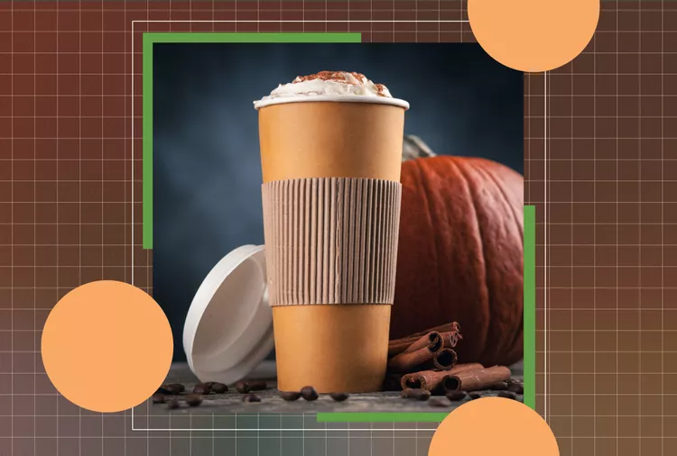

What Happens to Your Body When You Drink
Pumpkin Spice Latte Every Day
PSL season is upon us. Learn how it can affect
your health and small swaps you can make.
By Caroline Thomason, RD, CDCES Published on September 13, 2024

The arrival of fall brings the return of the beloved pumpkin spice latte. This seasonal favorite has a devoted
following, but what happens to your body if you indulge in one every day? Let’s break down the nutrition
facts of a pumpkin spice latte. Plus, we’ll explore the potential
health impacts of making it a daily habit, from caffeine intake to added sugar content and everything in between.
Pumpkin Spice Latte Nutrition Facts
A pumpkin spice latte (PSL) is a popular seasonal beverage made with espresso,
steamed milk, a mix of traditional autumn spices (like cinnamon, nutmeg and clove)
and often pumpkin-flavored syrup. While it’s delicious and comforting, the drink’s
nutritional profile can vary widely depending on the size, ingredients and how it’s prepared.
This nutrition information is based on a standard medium size PSL from Dunkin’ with whole milk
- Calories: 420
- Carbohydrates: 59g
- Dietary Fiber: 0g
- Total Sugar: 55g
- Added Sugar: 36g
- Saturated Fat: 8g
- Cholesterol: 45mg
What Happens to Your Body When You Drink a Pumpkin Spice Latte Every Day
You May Drink More Caffeine
Drinking a pumpkin spice latte every day increases your daily caffeine intake,which can have both positive and negative effects. On the plus side, moderate caffeine consumption
has been linked to improved focus, alertness and even a lower risk of certain diseases like Parkinson’s and Alzheimer’s disease.
2 However, too much caffeine can lead to increased anxiety, digestive issues and disrupted sleep patterns. The 2020-2025 Dietary
Guidelines for Americans recommends consuming at most 400 milligrams of caffeine per day, which is about the amount found in
4 cups of drip coffee.3 It’s important to monitor how much caffeine you’re consuming to avoid any potentially negative effects.